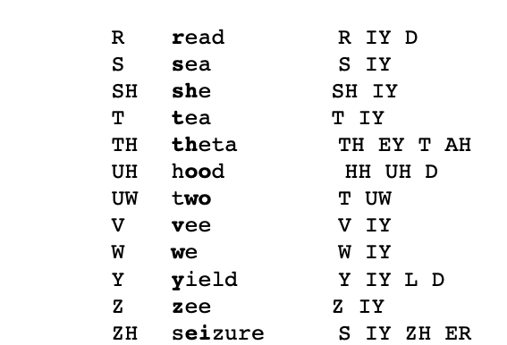
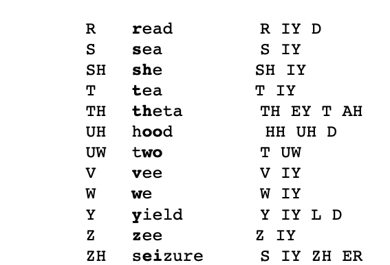

Find words using spelling pattern or sound
Go to the instructions tab for how to use this
If you enter both the spelling pattern and the sound, Word Picker will find words that have the spelling pattern and the sound. If you only enter one of these, results for the one that you enter will be found.
Only the first 80 results will be displayed.
instructions for word picker
Welcome to word picker!
You can find words by sound or spelling pattern. To do it by sound, find the sound you want that is bolded in the example section of the table. Then find the corresponding phoneme and type it in the type sound here... input field.


If you want to find words using a spelling pattern, type in a spelling pattern. To find words that have a consonant, type in a capital C. For vowels, type a consonant V. If you only type in a capital C, it won't show any results because there are no words that are just a consonant and nothing else. To find words that contain a consonant (there are many), you need to type a dash in the end and the begining of the C. The one at the end means that it should include results that start with a consonant. The one at the start shows that it should also include words that end with a consonant. But if you want to find words that shows a spelling pattern and another spelling pattern, seperate them with a comma. A lowercase letter just means a additional letter that you typed. You can also doubble something, like a consonant. This will make the second one the same letter as the first. To do that, add a number after the thing you want to doubble, so the C for the consonant becomes C2. The number that you type in is the number of times it gets repeated. This is useful when it goes right after a C or V. To connect these, just type the next one after the one before it.
To find words that contain a spelling pattern and also contains a sound, enter both the sound and spelling pattern.

If you want to find words using a spelling pattern, type in a spelling pattern. To find words that have a consonant, type in a capital C. For vowels, type a consonant V. If you only type in a capital C, it won't show any results because there are no words that are just a consonant and nothing else. To find words that contain a consonant (there are many), you need to type a dash in the end and the begining of the C. The one at the end means that it should include results that start with a consonant. The one at the start shows that it should also include words that end with a consonant. But if you want to find words that shows a spelling pattern and another spelling pattern, seperate them with a comma. A lowercase letter just means a additional letter that you typed. You can also doubble something, like a consonant. This will make the second one the same letter as the first. To do that, add a number after the thing you want to doubble, so the C for the consonant becomes C2. The number that you type in is the number of times it gets repeated. This is useful when it goes right after a C or V. To connect these, just type the next one after the one before it.
To find words that contain a spelling pattern and also contains a sound, enter both the sound and spelling pattern.
instructions for sentence picker
Welcome to sentence picker! Type any word to find examle sentences.